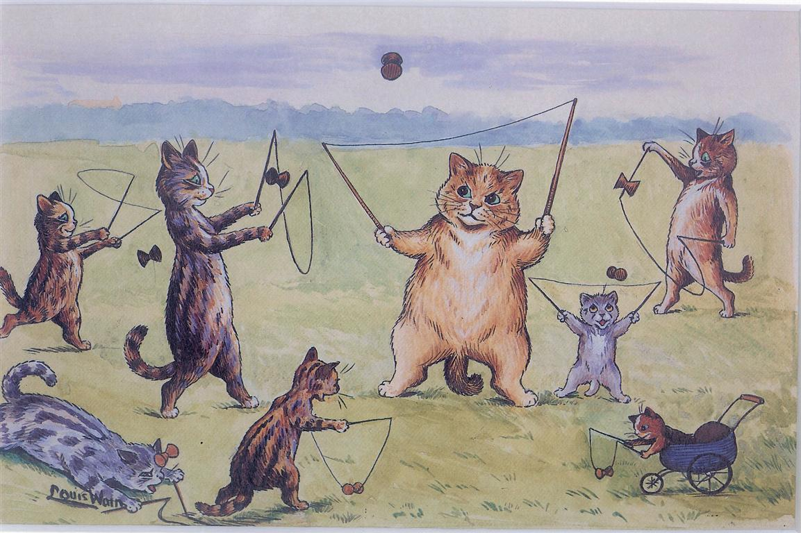
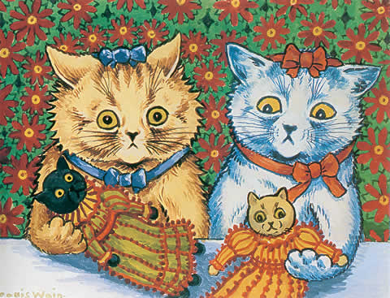

Louis Wain
Louis Wain (1860-1939) fue un ilustrador inglés famoso por sus dibujos de gatos antropomorfos. Su estilo evolucionó desde
lo realista hasta lo psicodélico, reflejando posibles cambios en su salud mental. Su obra sigue siendo influyente en el arte y en estudios
sobre creatividad.


Vicent Van Gogh
Vincent van Gogh (1853-1890) fue un pintor neerlandés cuya obra intensa y emotiva reflejó su compleja salud mental.
Su estilo, caracterizado por colores vibrantes y pinceladas expresivas, evolucionó junto a sus crisis personales. Aunque incomprendido en vida,
su arte es hoy fundamental en la historia del expresionismo.